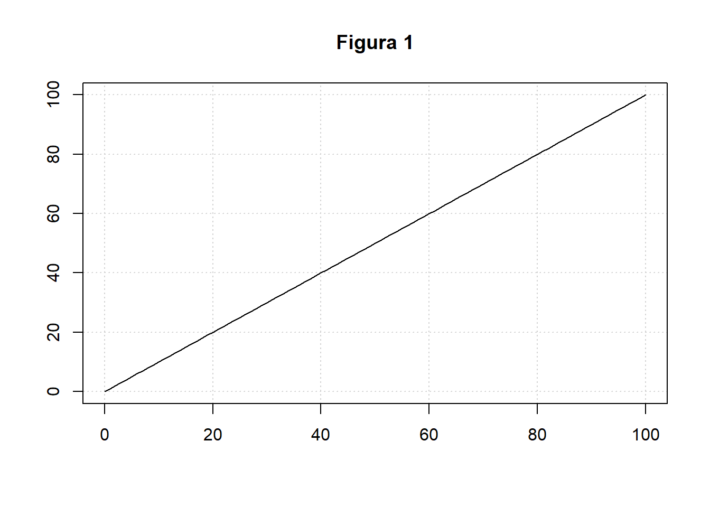

1.1 Razón
Una razón es una comparación multiplicativa de dos o más cantidades o medida. La razón entre \(a\) y \(b\) cuando \(b\) es una cantidad distinta de cero, se escribe: \(\frac{a}{b}\) o \(a:b\) y se lee \(a\) es a \(b\). Esta relación nos da cuántas veces una cantidad es igual a la otra cantidad, como 6 estudiantes por 1 profesor o 2 tazas de azúcar para 5 tazas de harina. Independientemente de la situación, las comparaciones de razones siempre se relacionan de forma multiplicativa. Se puede describir esta relación de varias formas, tales como:
- Ocho estudiantes por cada adulto.
- Un adulto por cada ocho estudiantes.
- El número de adultos es 14el número de estudiantes.
- Hay cuatro veces más estudiantes que adultos.
Cabe mencionar que la razón puede tener dos interpretaciones. La primera es por unir o componer dos cantidades de una manera que “conserva una relación multiplicativa”, es decir, un cierto número de una cantidad junto con un cierto número de otra cantidad crea un compuesto unidad (Beckmann, 2014). Por ejemplo,
- Unidad compuesta de 3 cuadros negros a 1 cuadro blanco.


- Unidad compuesta de 7 estudiantes de matemáticas a 3 estudiantes de estadística.


- Unidad compuesta de 1 libra de arroz a 2 kilos de lentejas.
Observemos que libras de arroz y kilos de lentejas son cantidades de medidas diferentes mientras que en el anterior, las cantidades solo eran estudiantes. Esto nos dice que las cantidades que componen una unidad compuesta pueden ser las mismas o diferentes.
La segunda interpretación consiste en comparar multiplicativamente dos cantidades. Por ejemplo, en una situación cotidiana en el que estamos comparando el precio de dos artículos, es conveniente notar cual es el artículo más costoso, de lo que lleva a decir: “el artículo 1 es n veces más costoso que el artículo 2”, o también es válido decir: “el artículo 2 vale $5000 más que el artículo 1. Sin embargo, la relación que ocurre es en términos aditivos contra multiplicativos. Por tanto, la primera expresión, la cual es dada en términos multiplicativos, es un ejemplo de razón como comparación multiplicativa.
Precisamos advertir que la razón no es una fracción en el sentido matemático, la confusión puede deberse al hecho de que una de las notaciones para la razón, \(\frac{a}{b}\) donde \(b\neq 0\), comparte la misma forma con una fracción. Ilustremos mejor mediante el siguiente ejemplo: En el primer parcial, Ana acierta en \(3\) preguntas de \(10\) preguntas. Después en el segundo parcial responde bien \(5\) de \(7\) preguntas . ¿Cuál es la razón de las preguntas acertadas en los dos parciales?
Número de preguntas acertadas: \(\frac{6 \hspace{2mm} aciertos}{10 \hspace{2mm} preguntas}+\frac{4\hspace{2mm} aciertos}{7\hspace{2mm} preguntas}+\frac{10 \hspace{2mm} aciertos}{17 \hspace{2mm} preguntas}\)
Pero Ana siempre llega \(\frac{3}{4}\) de hora tarde a las clases los martes y \(\frac{5}{8}\) de hora tarde para clases los jueves. ¿Cuántas horas en total llega Ana tarde a las clases los martes y jueves?
Número de horas que llegar tarde: \(\frac{3}{4}hora+\frac{5}{8}hora=\frac{11}{8}hora\)
El primer contexto es un ejemplo de una situación de razón, y el segundo contexto es un ejemplo de una situación de fracción. Notemos que el primer ejemplo involucra cuatro cantidades: \(6\) aciertos de \(10\) preguntas y \(4\) aciertos de \(7\) preguntas. En contraste, el segundo ejemplo involucra sólo dos cantidades: \(\frac{3}{4}\) de hora y \(\frac{5}{8}\) de hora.
1.1.1 Proporción
Proporción es la relación de igualdad que existe entre dos razones. Se escribe \(\frac{a}{b}=\frac{c}{d}=k\) con \(d,b\neq 0\) y para que puede existir la razón \(ac\neq 0\). Y se lee \(a\) es a \(b\) como \(c\) es a \(d\). Donde
\(k\): Constante de proporcionalidad.
\(a,d\): Extremos de la proporción.
\(b,c\): Medios de la proporción.
Teorema fundamental de las proporciones. Dos razones forman una proporción sí y sólo si el producto de los extremos es igual al producto de los medios. \(\frac{a}{b}=\frac{c}{d} \Longleftrightarrow ad=bc.\) Asimismo son equivalentes las siguientes expresiones en la interpretación de proporciones:
\(a=\frac{bc}{d} \Longleftrightarrow c=\frac{ad}{b}\)
Esto implica que en ocasiones veremos a la proporción expresadas de esas maneras.
El término relación proporcional se usa para describir razones que comparten la misma relación multiplicativa entre las dos cantidades en cada razón. Por ejemplo, si un metro de tela tiene un precio de \(\$\$\$\), el costo de un corte de tela depende del número de metros que tenga el largo. A mayor número de metros de tela corresponde un mayor costo. Esto se conoce como proporcionalidad y se representa por la ecuación \(y=kx\) en donde \(y\) es la variable dependiente , \(k\) es la pendiente y \(x\) la variable independiente. Observemos que de dicha ecuación, nos dice que, \(k\) está comparando multiplicativamente las cantidades \(x\) e \(y\), es decir, \(k\) es una constante de razón, la cual es conocida como la constante de proporcionalidad.
Cuando al aumentar una de las cantidades y aumente proporcionalmente la otra diremos que es una proporcionalidad directa (véase la figura 1). En caso contrario, cuando al aumentar una cantidad la otra disminuye en la misma proporción, diremos que es una proporcionalidad inversa(véase la figura 2). De manera más formal enunciamos:
1. Proporcionalidad directa: Dos variables \(x\) e \(y\), son directamente proporcionales si existe una constante no nula \(k\) tal que \(y=kx\). Para \(x\neq 0\) la constante de proporcionalidad \(k\) puede expresarse como \(k=yx\).
Una proporcionalidad directa puede verse como una ecuación lineal de la forma \(y=mx+b\) con \(b=0\) y una pendiente \(m=k\) . Esto corresponde al crecimiento lineal.

2. Proporcionalidad inversa: Dos variables, \(x\) e \(y\), son inversamente proporcionales si el del producto \(xy\) es constante, es decir, \(xy=k\), donde \(k\) es la constante de proporcionalidad. La gráfica de dos variables que varían inversamente en el plano cartesiano de coordenadas es una hipérbola rectangular . El producto de las \(x\) y \(y\) entre cada punto de la curva es igual a la constante de proporcionalidad . Dado que ni \(x\) y ni y pueden ser iguales a cero (porque k no es cero), la gráfica nunca cruza ninguno de los ejes.
1.1.2 Porcentaje
Un porcentaje es la forma de expresar un número como partes de cada cien. Los porcentajes son el cociente o razón entre dos variables con una misma unidad de medida en el mismo periodo. De manera más clara, podemos construir indicadores de porcentaje aplicando la operación
\(\frac{Numerador}{Denominador}\times 100\).
Algunos ejemplos son los siguientes
| Nombre del indicador | Método de cálculo | Procedimiento |
|---|---|---|
| Porcentaje de estudiantes vinculados a actividades de extensión en la universidad en el periodo 2019-II. | (Número de estudiantes vinculados a actividades de extensión en la universidad en el periodo 2019-II /Total de estudiantes matriculados en el periodo 2019-II)\(\times 100\) | \(\frac{3600}{54284}\times 100=11,61\%\) |
| Porcentaje de tesis meritorias por estudiantes graduados en la universidad en el periodo 2020-I. | (Número total de tesis meritorias por estudiantes graduados en el universidad en el periodo 2020-I/Total de estudiantes graduados en el periodo 2020-I)\(\times 100\) | \(\frac{195}{4926}\times 100=3,95\%\) |
| Porcentaje de funcionarias administrativas en la universidad en el periodo 2020-I. | (Número de administrativos mujeres en el periodo 2020-I/Total de administrativos en el periodo 2020-I)\(\times 100\) | \(\frac{1460}{2850}\times 100=51,2\%\) |
Adicional a esto, es importante mencionar los procedimientos en el cálculo de porcentajes: Por aplicación directa o por proporciones, los cuales sirven como ruta para determinar otros hallazgos del indicador. - Por aplicación directa, para el cálculo del \(t\%\) de una cantidad \(N\) y es hallado mediante la expresión :
\(\frac{t}{100}\times N\).
Un claro ejemplo, es cuando se quiere comprar un artículo en descuento, este simple cálculo nos ayuda a determinar el precio final del artículo. - Por proporciones, es utilizado cuando se plantea una proporción asignando el \(100\%\) al total y se calcula mediante la expresión:
\(\frac{t\%}{x}=\frac{100\%}{N}\)
En definitiva, un porcentaje es un ejemplo de proporcionalidad. Además note que
\(\frac{t\%}{x}=\frac{100\%}{N}=k \Longleftrightarrow \frac{t\%}{x}=k \Longleftrightarrow t\%=kx\)
es decir, es proporcionalmente directo.
1.1.3 Tasas
Una tasa es una razón entre dos cantidades con unidades distintas. Si la tasa o la cantidad frente a la cual algo está cambiando no está especificada, usualmente la tasa es por unidad de tiempo. Sin embargo, una tasa de cambio puede ser especificada por unidad de tiempo, por unidad de medida o masa o cualquier otra cantidad. Naturalmente para describir las unidades de una tasa, la palabra “por” se utiliza para poder separar las unidades de dos medidas utilizadas para calcular la tasa como por ejemplo, pesos por libra, metros por segundo, millas por hora, y días enfermo por año. De aquí es conveniente clasificar una tasa cuando el denominador es una variable temporal ó cuando el denominador es un “stock” poblacional.
1. cuando el denominador es una variable temporal. Mide la frecuencia con la que, en un periodo de tiempo, aparece un suceso en una población. El cálculo de tasas se realiza dividiendo el total de eventos ocurridos en un periodo dado en una población entre el tiempo de observación en el que ocurrieron dichos eventos. Las tasas se expresan multiplicando el resultado obtenido por una potencia de 10, en particular con 100, con el fin de permitir rápidamente su comparación con otras hechos.
\(\frac{\text{Número de eventos sucedidos}}{\text{Periodo en que fueron observados}}\times 100\)
En efecto, magnitudes vectoriales como la velocidad que describe el cambio de posición con respecto al tiempo y la aceleración, el cambio de velocidad por unidad de tiempo son ejemplos de tasas muy comunes según esta clasificación. En otras áreas, también encontramos la tasa de flujo volumétrico, el cual relaciona el volumen de un líquido que pasa a través de un superfície dado por unidad temporal o la tasa de bits, en computación, que relaciona el número de bits enviados o procesados por un computador por unidad temporal.
2. cuando el denominador es un “stock” poblacional. Haciendo referencia a un “stock” poblacional como las poblaciones en un punto exacto del tiempo y tienen como fuentes los censos, padrones, estimaciones de población o encuestas. El cálculo es el cociente que resulta de dividir un número de acontecimientos sucedidos durante un periodo de tiempo por la población media existente durante ese periodo (stock). Algunos ejemplos clásicos son los siguientes
Tasa de mortalidad: \(\frac{\text{Número de difunciones en un periodo de tiempo}}{\text{Población media en ese periodo}}\times 100\)
Tasa de natalidad: \(\frac{\text{Número de nacimientos en un periodo de tiempo}}{\text{Población media en ese periodo}}\times 100\)
Tasa de desempleados: \(\frac{\text{Número de desempleados en un periodo de tiempo}}{\text{Población media en ese periodo}}\times 100\)